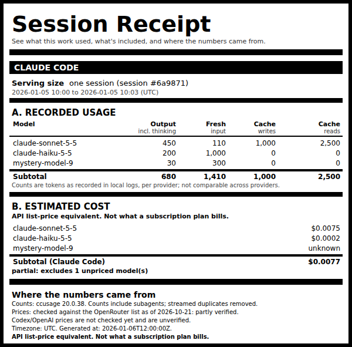

What it is
A local command-line tool that reads your Claude Code usage logs (and, experimentally, Codex logs) and prints a nutrition-label style receipt for one session or one day: the tokens recorded, an API list-price equivalent cost, and exactly which sources and prices produced each number.
Accounting is plain deterministic code. No model calls, no account, no upload, no telemetry. Making a receipt never touches the network.
Every receipt on this page is built from synthetic fixtures: fake projects, fake prompts, made-up usage. No one's real logs are shown.

Example outputs
Each receipt comes in three formats: a self-contained HTML page, an SVG label, and JSON for scripts.
| Example | Formats |
|---|---|
| Claude Code session (the default receipt) | HTML · SVG · JSON |
| Codex session (experimental support) | HTML · SVG · JSON |
Claude Code session with the optional --env scenarios (illustrative only, see below) |
HTML · SVG · JSON |


How to read the numbers
API-equivalent cost, not your bill
The cost line is what the recorded tokens would cost at public API list prices. If you use a subscription plan, that is not what you are charged.
Prices are a dated snapshot
Prices come from a saved copy of OpenRouter's public model list, and every receipt prints the
date of that copy. Refresh it whenever you like with session-receipt update-prices;
that is the only command that uses the network.
Unknown stays unknown
If a model has no known price, its cost shows as unknown and the total is marked partial. It is never counted as $0.
Claude Code first, Codex experimental
Claude Code logs are the main target. Codex support is experimental: its prices are not checked against the snapshot, and token counts from different providers are not comparable.
Environmental scenarios are optional and illustrative
With --env, a receipt adds low/central/high energy, water and carbon scenarios built
from published estimates. They are not measurements and not bounds, and they are off by default.
Try it
Install from source (no wheel is published), then render the synthetic demo:
git clone https://github.com/parttimediarybehavior/session-receipt.git
cd session-receipt
npm ci --prefix vendor # pinned ccusage 20.0.38 (MIT)
python3 -m venv .venv && .venv/bin/pip install -e .
.venv/bin/session-receipt demo --out /tmp/sr_demo --now 2026-01-06T12:00:00ZThen, on your own machine, .venv/bin/session-receipt session --latest for your most recent
session. Python 3.10+ and Node.js are required; only Linux x64 has been tested. Your logs are
only read, never modified, and nothing leaves your computer.